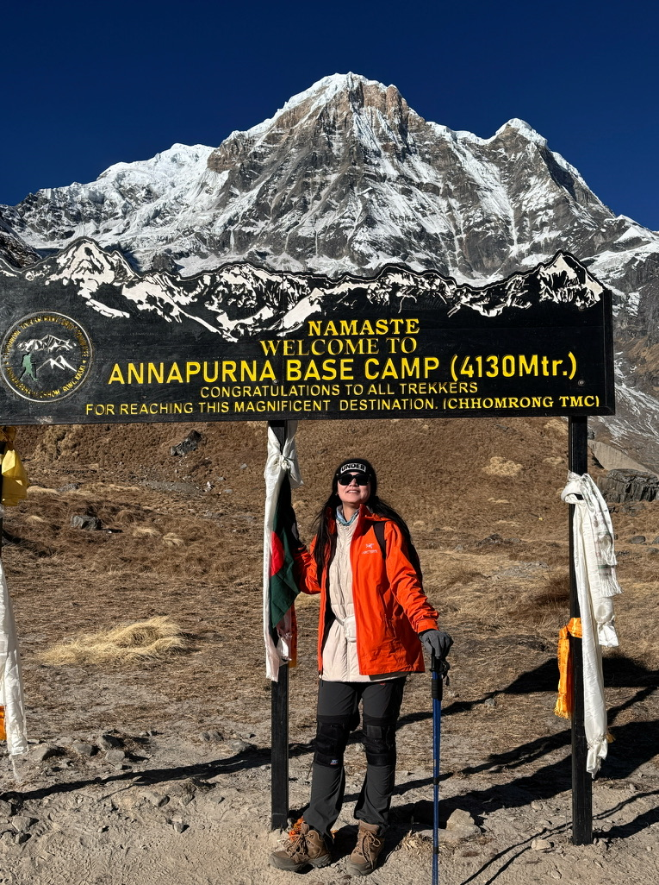
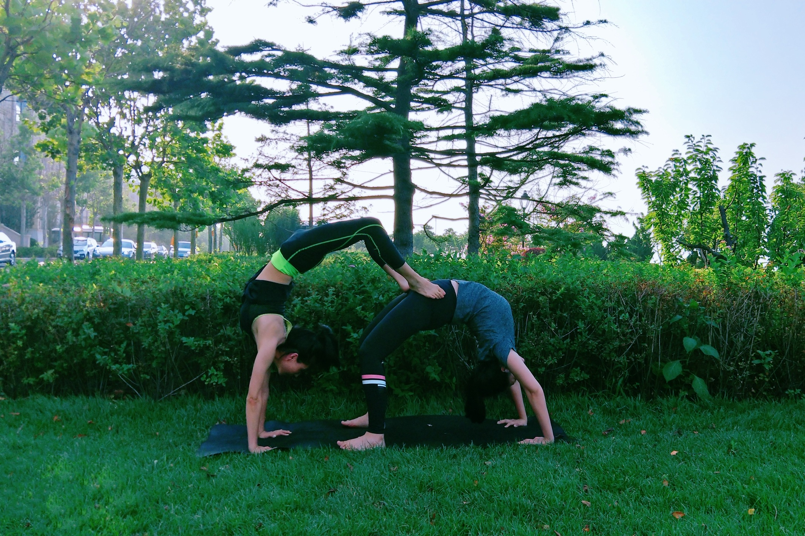

BEYOND THE LAB
Curiosity doesn't
stop at the lab door.
Travel, trails, movement and cultural discovery help me reset, notice details and see familiar things from a different angle.
01 / OUT IN THE WORLD
Travel & hiking
Replace the sample image slots with your own favourite photographs.




02 / FINDING BALANCE
Yoga & everyday rituals
A personal corner, not a performance résumé.
“Stay curious. Keep moving. Make room to breathe.”
Yoga is one way I make space for attention and balance. Outside research, I also enjoy Chinese calligraphy, Peking Opera, cooking and exploring local culture.
Choose images that feel natural and genuinely yours. A few thoughtful photographs are more effective than a large, uncurated gallery.

03 / SMALL JOYS
Things I enjoy
Chinese calligraphy
Patience, rhythm and the beauty of a single line.
Peking Opera
A lifelong appreciation for traditional performance and storytelling.
Food & local culture
Getting to know a place through its everyday details and food.